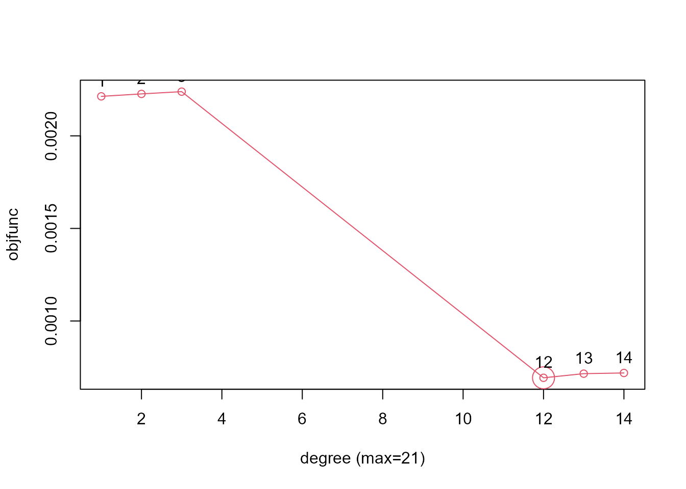
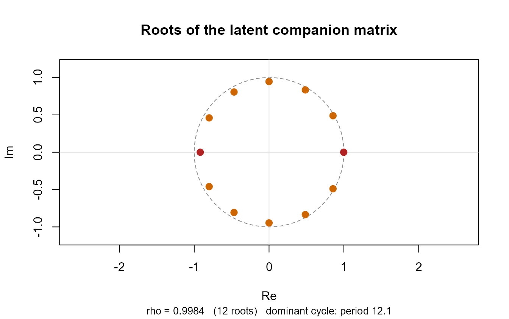
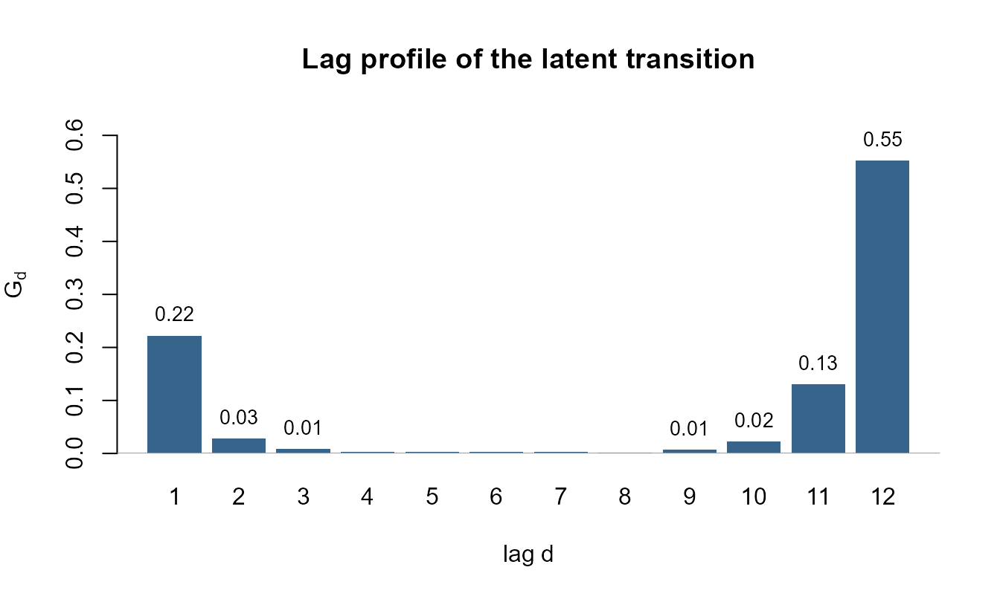
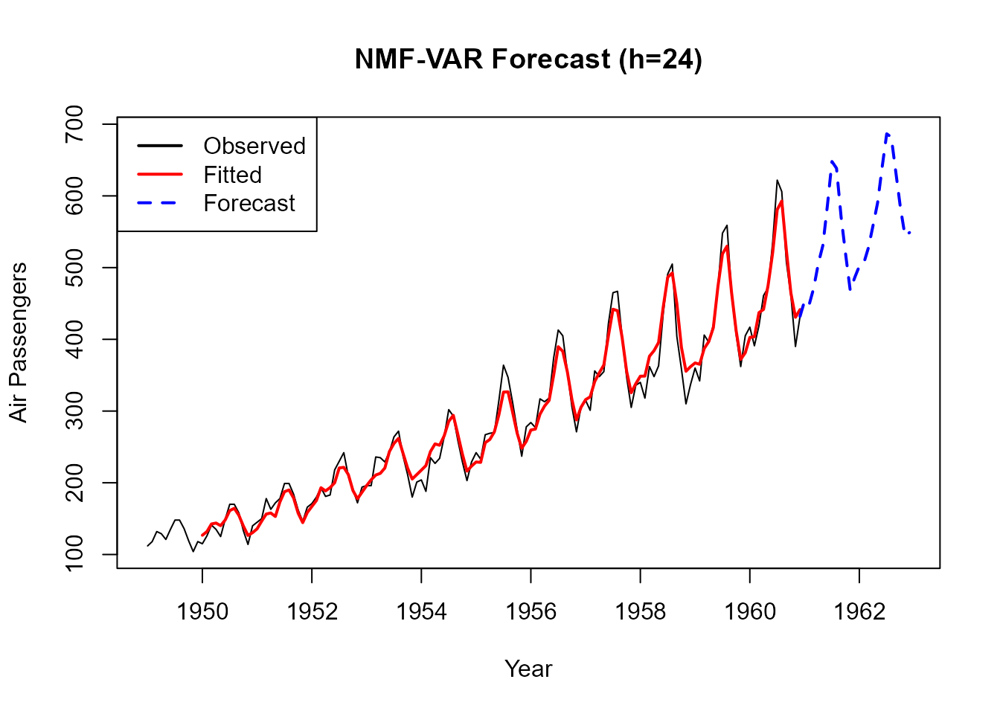
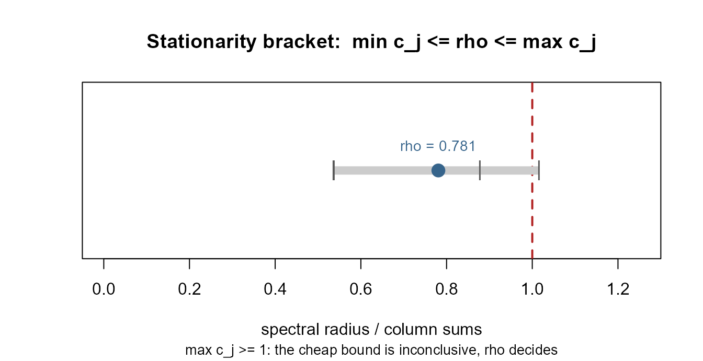
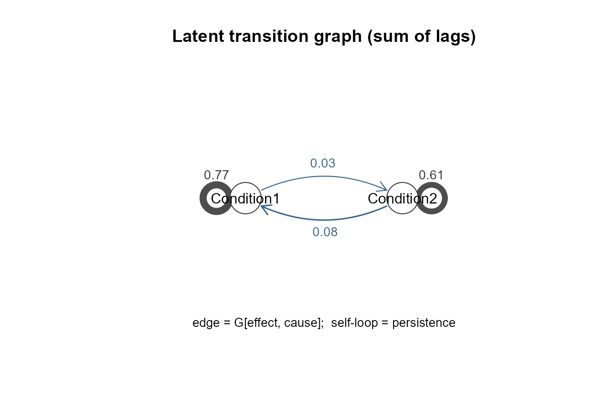
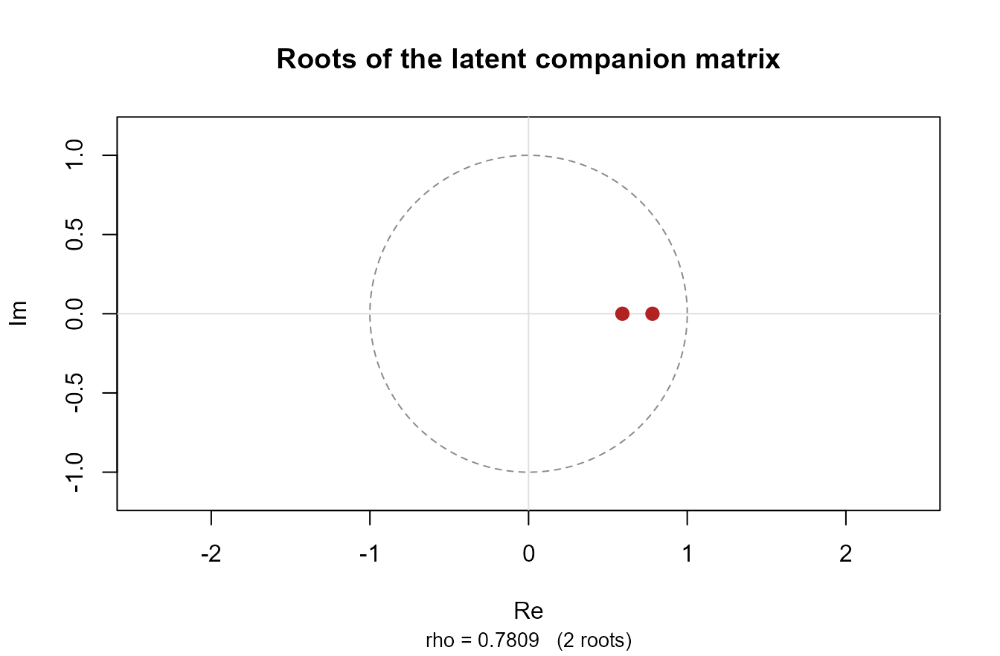
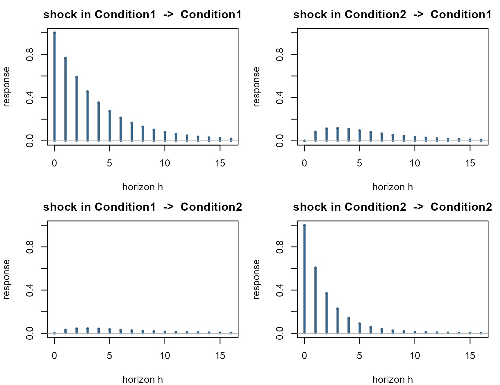
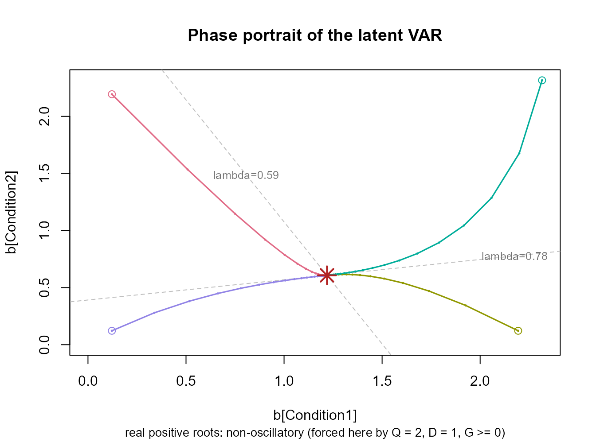
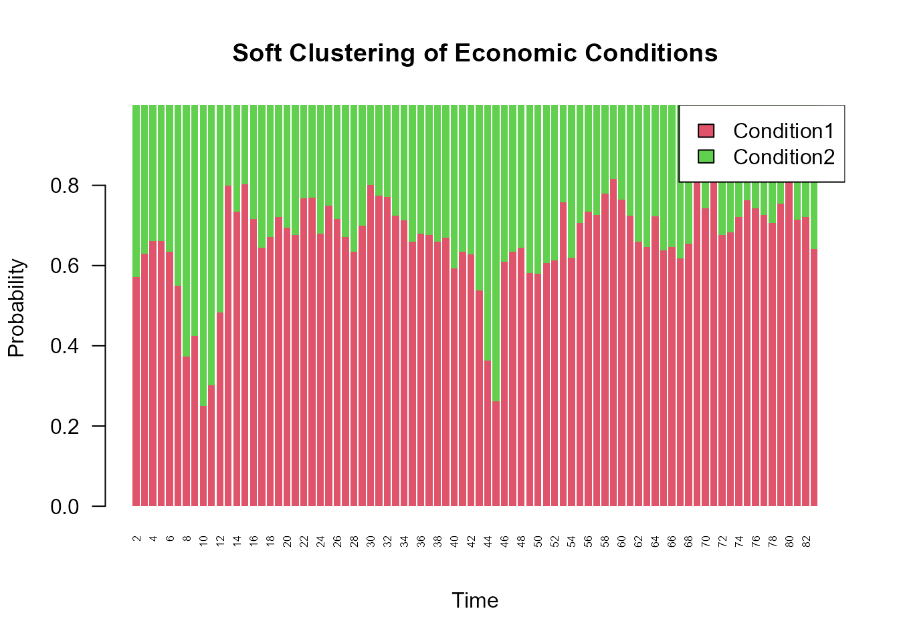

Time Series Analysis with NMF-VAR
Source:vignettes/timeseries-with-nmfkc.Rmd
timeseries-with-nmfkc.RmdIntroduction
This vignette demonstrates how to apply the nmfkc
package to time series data using the NMF-VAR (Non-negative
Matrix Factorization - Vector Autoregression) framework. This
approach models the coefficient matrix of NMF as a VAR process (\(B \approx C A_{lag}\)), allowing for both
dimensionality reduction and temporal modeling.
Key functions in nmfkc such as nmfkc.ar and
nmfkc.ar.degree.cv directly support R’s native
ts objects, preserving time series
properties automatically. Once a model is fitted,
nmfkc.ar.stationarity() checks dynamic stability,
nmfkc.ar.latent() returns the \(Q
\times Q\) latent transition matrices \(G_d = \Theta_d X\) — which summarise the
dynamics in the low-dimensional latent space rather than in the \(P \times P\) observed space, and can be
plotted directly — and nmfkc.ar.latent.inference() attaches
standard errors to them.
We will cover two scenarios:
-
Univariate AR: Forecasting airline passengers
(
AirPassengers). -
Multivariate VAR: Analyzing macroeconomic
indicators (
Canada).
First, let’s load the necessary packages.
library(nmfkc)
library(vars) # For Canada dataset
#> Warning: package 'vars' was built under R version 4.4.3
#> Loading required package: MASS
#> Warning: package 'MASS' was built under R version 4.4.3
#> Loading required package: strucchange
#> Warning: package 'strucchange' was built under R version 4.4.2
#> Loading required package: zoo
#> Warning: package 'zoo' was built under R version 4.4.3
#>
#> Attaching package: 'zoo'
#> The following objects are masked from 'package:base':
#>
#> as.Date, as.Date.numeric
#> Loading required package: sandwich
#> Warning: package 'sandwich' was built under R version 4.4.2
#> Loading required package: urca
#> Warning: package 'urca' was built under R version 4.4.3
#> Loading required package: lmtest
#> Warning: package 'lmtest' was built under R version 4.4.2Example 1: Univariate Autoregression with AirPassengers
The AirPassengers dataset contains monthly international
airline passenger numbers. We will model this univariate time series
using an autoregressive (AR) model.
1. Data Preparation
We simply log-transform the ts object to stabilize
variance. We do not need to manually convert it to a
matrix or create time vectors; nmfkc functions handle
ts objects directly.
# Load and transform the ts object
d_air <- AirPassengers
d_air_log <- log10(d_air) # Still a ts object2. Model Selection (Lag Order)
We use Cross-Validation to find the optimal degree
(lag order). By passing the ts object
d_air_log, the function automatically handles the time
dimension.
# Evaluate lag orders from 1 to 14
# Note: ts objects are automatically transposed to (Variables x Time) internally
cv_res <- nmfkc.ar.degree.cv(d_air_log, rank = 1, degree = 1:14, epsilon=1e-6, maxit=500000)
#> degree=1...0.2sec
#> degree=2...0.6sec
#> degree=3...0.7sec
#> degree=4...0.7sec
#> degree=5...0.7sec
#> degree=6...0.7sec
#> degree=7...0.8sec
#> degree=8...0.8sec
#> degree=9...0.9sec
#> degree=10...0.9sec
#> degree=11...0.8sec
#> degree=12...0.8sec
#> degree=13...0.9sec
#> degree=14...1sec
# Check the optimal degree
cv_res$degree
#> [1] 12
# For this example, we will proceed with D=12 (capturing monthly seasonality)
D <- 123. Model Fitting
We construct the observation matrix Y and covariate
matrix A (lagged Y) using nmfkc.ar(). The
returned matrices Y and A will have time-based
column names derived from the ts object.
# Create matrices for the AR(12) model
a_air <- nmfkc.ar(d_air_log, degree = D, intercept = TRUE)
# Fit the NMF-AR model (Rank=1 for univariate)
res_air <- nmfkc(Y = a_air$Y, A = a_air$A, rank = 1, epsilon = 1e-6, maxit=500000)
#> Y(1,132)~X(1,1)C(1,13)A(13,132)=XB(1,132)...0.2sec
# Check goodness of fit
res_air$r.squared
#> [1] 0.9798257
# Check for stationarity (spectral radius < 1)
st_air <- nmfkc.ar.stationarity(res_air)
c(rho = st_air$spectral.radius, stationary = st_air$stationary)
#> rho stationary
#> 0.9983758 1.0000000With rank = 1 the latent VAR is one-dimensional, so the
latent view is at its simplest: the twelve \(1\times1\) matrices \(G_d\) are just the AR coefficients of the
single latent series, and colsum.max alone certifies
stationarity.
lat_air <- nmfkc.ar.latent(res_air)
c(rho = lat_air$spectral.radius, colsum.max = lat_air$colsum.max)
#> rho colsum.max
#> 0.9983758 0.9856695
unlist(lat_air$G)[1:3] # G_1, G_2, G_3 of the latent series
#> lag1 lag2 lag3
#> 0.222304511 0.028654098 0.008072265\(\rho = 0.999\) is only just below 1, and the roots say why. All twelve sit close to the unit circle at roughly equal angles: this is a seasonal root, not a slow cycle. A single number cannot distinguish the two.
plot(lat_air, type = "roots")
The lag profile shows the same structure in the coefficients themselves — month 12 dominates, month 1 carries the short-run inertia.
plot(lat_air, type = "lag")
4. Forecasting
We can forecast future values using the fitted model.
nmfkc.ar.predict uses the time properties stored in the
model to generate the correct future time sequence.
# Forecast next 2 years (24 months)
h <- 24
pred_res <- nmfkc.ar.predict(x = res_air, Y = a_air$Y, n.ahead = h)
# Convert predictions back to original scale
pred_val <- 10^as.vector(pred_res$pred)
pred_time <- pred_res$time # Future time points generated by the function
# --- Plotting ---
# Setup plot range
xlim_range <- range(c(time(d_air), pred_time))
ylim_range <- range(c(d_air, pred_val))
# 1. Observed data (Black)
plot(d_air, type = "l", col = "black",
xlim = xlim_range, ylim = ylim_range, lwd = 1,
xlab = "Year", ylab = "Air Passengers", main = "NMF-VAR Forecast (h=24)")
# 2. Fitted values during training (Red)
# a_air$Y has column names as time strings; we parse them for plotting
fitted_time <- as.numeric(colnames(res_air$XB))
lines(fitted_time, 10^as.vector(res_air$XB), col = "red", lwd = 2)
# 3. Forecast (Blue)
# Connect the last observed point to the first forecast for a continuous line
last_t <- tail(as.numeric(time(d_air)), 1)
last_y <- tail(as.vector(d_air), 1)
lines(c(last_t, pred_time), c(last_y, pred_val), col = "blue", lwd = 2, lty = 2)
# Add legend
legend("topleft", legend = c("Observed", "Fitted", "Forecast"),
col = c("black", "red", "blue"), lty = c(1, 1, 2), lwd = 2)
Example 2: Vector Autoregression with Canada Dataset
The Canada dataset contains four quarterly macroeconomic
variables. We’ll use a multivariate NMF-VAR model to analyze the
relationship between these variables.
1. Data Preparation
We take the first difference to achieve stationarity, normalize the
data to \([0, 1]\), and transpose it to
the Variables x Time format required by NMF.
# Load, difference, and normalize
d0_canada <- Canada
dd_canada <- apply(d0_canada, 2, diff) # Returns a matrix (Time x Vars)
dn_canada <- nmfkc.normalize(dd_canada)
# Transpose to (Variables x Time) for NMF
Y0_canada <- t(dn_canada)
# Create matrices for VAR(1)
a_canada <- nmfkc.ar(Y0_canada, degree = 1, intercept = TRUE)2. Model Fitting
We fit a model with rank = 2 to identify two latent
economic conditions driving the four variables.
# Fit the NMF-VAR model
# epsilon = 1e-8: this fit feeds the inference in Section 5, where coefficients
# sitting on the non-negativity boundary must actually have reached it.
res_canada <- nmfkc(Y = a_canada$Y, A = a_canada$A, rank = 2, prefix = "Condition", epsilon = 1e-8)
#> Y(4,82)~X(4,2)C(2,5)A(5,82)=XB(2,82)...0sec
# R-squared and Stationarity
res_canada$r.squared
#> [1] 0.5994866
st_canada <- nmfkc.ar.stationarity(res_canada)
st_canada
#> rho(companion, 2x2, method="latent") = 0.7809 -> stationary
#> rho(sum_d G_d) = 0.7809 (< 1 iff stationary)
#> bracket: min_j c_j = 0.5360 <= rho(sum_d G_d) <= max_j c_j = 1.0150
#> max_j c_j >= 1: the cheap bound is inconclusive, rho decides
#>
#> For the dynamics behind this number see nmfkc.ar.latent(), for a test of H0: rho >= 1 see nmfkc.ar.latent.inference().The bracket says the cheap sufficient condition is inconclusive here, so the eigenvalue is what decides.
plot(st_canada)
3. Latent Transition Matrices
The fitted VAR acts on the four observed variables through the \(P \times P\) matrices \(\Xi_d = X\Theta_d\). Those are awkward to read, and they grow with the number of series. But the same dynamics can be written in the latent space: the residual-free recursion for the coefficient vector is
\[\boldsymbol b_t=\sum_{d=1}^{D}G_d\,\boldsymbol b_{t-d}+\boldsymbol\theta, \qquad G_d=\Theta_d X\ \ (Q\times Q).\]
One caveat before reading anything into the \(G_d\). This display drops the observation residual. With \(\boldsymbol y_t = X\boldsymbol b_t+\boldsymbol e_t\) the exact identity is
\[\boldsymbol b_t=\sum_{d}G_d\,\boldsymbol b_{t-d}+\boldsymbol\theta +\sum_{d}\Theta_d\,\boldsymbol e_{t-d},\]
a VARMA\((D,D)\), not a VAR\((D)\). So \(G_d\) is the autoregressive operator of the fitted VAR reduced to the latent space — which is what every panel below uses — and not the coefficient matrix of a latent VAR that the scores obey exactly. In particular an entry of \(G_d\) is not a Granger-causality statement between latent conditions: the moving-average term is common to all coordinates and is not conditioned on.
nmfkc.ar.latent() returns these latent
transition matrices. Here that means a single \(2\times2\) matrix instead of a \(4\times4\) one — and for a larger problem
(say 47 regions with 7 lags) it is \(4\times4\) blocks instead of \(47\times47\) ones, which is the difference
between something you can read and something you cannot.
lat_canada <- nmfkc.ar.latent(res_canada)
lat_canada
#> Latent transition matrices G_d = Theta_d %*% X (row = effect at t, column = cause at t-d)
#>
#> lag1:
#> Condition1 Condition2
#> Condition1 0.766 0.082
#> Condition2 0.031 0.606
#>
#> roots: 2 (companion 2x2) rho = 0.7809 -> stationary
#> all roots real and positive: non-oscillatory (overshoot is still possible)
#> (note: with Q = 2, D = 1 and G >= 0 the roots are real by construction --
#> the absence of a cycle is not a finding)
#>
#> Long-run mean of the latent scores (mu.b):
#> Condition1 Condition2
#> 1.219 0.608
#> Long-run composition (p*):
#> Condition1 Condition2
#> 0.667 0.333
#>
#> Effective dimension df = Q(P + PD + 1 - Q) = 14
#> For the stationarity verdict see nmfkc.ar.stationarity(), for standard errors nmfkc.ar.latent.inference().The convention is row = effect at \(t\), column = cause at \(t-d\): entry \((q,q')\) says how strongly condition \(q'\) in the previous quarter feeds condition \(q\) now. Diagonal entries are persistence, off-diagonal entries are spillover between the latent conditions.
# Persistence of each condition, and cross-condition spillover
diag(lat_canada$G$lag1)
#> Condition1 Condition2
#> 0.7663220 0.6057199
lat_canada$G$lag1[1, 2] # effect of Condition2 (t-1) on Condition1 (t)
#> [1] 0.08193278nmfkc.ar.stationarity() above reported three stability
numbers that say the same thing in increasing order of sharpness:
-
colsum.max— \(\max_j c_j\) of \(\sum_d \Theta_d\). If it is below 1 the model is stationary, with no eigenvalue computation at all. It is only a sufficient condition, so a value above 1 (as here) is simply inconclusive. -
spectral.radius.sum— \(\rho(\sum_d G_d)\), which is below 1 exactly when the model is stationary. -
spectral.radius— the spectral radius of the companion matrix itself.
The last one can be computed by either of two routes, selected with
method. The default "latent" uses the \(DQ \times DQ\) companion matrix of the
\(G_d\); "companion" uses
the \(PD \times PD\) companion matrix
of the \(\Xi_d\), as earlier versions
of the package always did. The two companion matrices share their
non-zero eigenvalues, so the answers agree — but the latent route is a
\(2\times2\) eigenproblem here instead
of \(4\times4\), and would be \(28\times28\) instead of \(329\times329\) for a 47-variable, 7-lag,
rank-4 model.
c(latent = lat_canada$spectral.radius,
companion = nmfkc.ar.stationarity(res_canada, method = "companion")$spectral.radius)
#> latent companion
#> 0.7808507 0.7808507When the fit is stationary the process has a well-defined long-run mean, which is reported in both the latent and the observed space (\(\boldsymbol\mu_b\) and \(\boldsymbol\mu_y = X\boldsymbol\mu_b\)):
lat_canada$mu.b
#> Condition1 Condition2
#> 1.2188754 0.6076773
lat_canada$mu.y
#> e prod rw U
#> 0.6648544 0.5764437 0.3167251 0.2685294Two further quantities are useful when choosing the rank.
df is the effective dimension \(Q(P+PD+1-Q)\) — the right degrees of
freedom when comparing \(R^2\) or
information criteria across \(Q\),
since the naive count \(Q(P+PD+1)\)
ignores the \(Q^2\) rotational
indeterminacy. separability is a one-line identifiability
check: values near 1 mean each basis owns an essentially pure variable,
so the factorization is unique up to permutation.
lat_canada$df
#> [1] 14
lat_canada$separability
#> Condition1 Condition2
#> 0.9999984 1.00000004. Plotting the Latent Dynamics
Section 3 read the \(G_d\) as
numbers. plot() draws them. The point of every panel below
is that it stays readable at a size the observed space does not: this
fit has \(Q^2 = 4\) latent impulse
responses instead of \(P^2 = 16\), and
a 47-region, 7-lag, rank-4 fit would have 16 instead of 2209.
The transition graph shows the feedback structure. Self-loops are persistence, arrows are spillover; a \(\boldsymbol y\to\boldsymbol b\to \boldsymbol y\) bipartite picture splits each round trip in half and so cannot show that the loop is asymmetric.
plot(lat_canada, type = "graph")
The roots on the unit circle say why \(\rho\) is where it is. Because the \(PD\times PD\) companion matrix has at most \(DQ\) non-zero eigenvalues, all of them fit on one plot. Complex roots are drawn separately and their period is reported — a fit can sit near the boundary because it cycles or because it is seasonal, and a single number cannot tell those apart.
plot(lat_canada, type = "roots")
The impulse responses are non-negative for every horizon, since \(G_d\ge0\). The shape is therefore a decay (own effect) or a hump (cross effect, zero at \(h = 0\)), and the half-life can be read straight off.
plot(lat_canada, type = "irf")
The phase portrait shows the pull towards \(\boldsymbol\mu_b\). Both eigenvalues here
are real and positive (0.781 and 0.591), so trajectories decay into the
fixed point rather than spiralling:
lat_canada$non.oscillatory is TRUE.
Three things must be said about that, because the panel invites three overclaims. First, at \(Q = 2\), \(D = 1\) with \(G\ge0\) the roots cannot be complex — the discriminant is \((a-d)^2+4bc\ge0\) — so the absence of a cycle here is a property of the design, not a finding about Canada. A cycle needs \(Q\ge3\) or \(D\ge2\). Second, non-oscillatory is not the same as monotone: a non-normal \(G\) can send a coordinate up before it comes down, which is exactly what the off-diagonal impulse responses above do (they peak at \(h=3\)). The flag is named after the roots for that reason. Third, the two decay rates are close (ratio \(0.591/0.781=0.76\)), so there is no sharp “collapse fast, then slide slow” separation: after eight quarters 43% of an initial deviation still sits in the fast direction.
What the panel does say is where the pull points and along which combinations. Thanks to non-negativity the slow eigenvector has both components positive — a common level of the two conditions, weighted 0.85 : 0.15 towards Condition 1 — while the fast one has opposite signs, i.e. an imbalance between them. The imbalance corrects relative to the level with a half-life of about 2.5 quarters.
plot(lat_canada, type = "phase")
One more panel is available: type = "lag" plots \((G_d)_{qq'}\) against \(d\) — with \(D =
1\) there is nothing to see, but for a multi-lag fit it answers
“how many periods does a shock take to arrive”, inside the model rather
than from cross-correlations computed outside it. (The stationarity
bracket is drawn by plot() on the
nmfkc.ar.stationarity object, as in Section 2.)
5. Standard Errors for the Latent VAR
Every number in Sections 3 and 4 is a point estimate from 82
quarters. nmfkc.ar.latent.inference() attaches a wild
bootstrap to all of them: it resamples the residuals, re-fits the whole
NMF-VAR on each replicate, and recomputes the latent quantities.
inf_canada <- nmfkc.ar.latent.inference(lat_canada, a_canada$Y, a_canada$A,
wild.B = 200, wild.seed = 2026)
#> Warning in nmfkc.ar.latent.inference(lat_canada, a_canada$Y, a_canada$A, : The
#> anchor-row / pure-column diagnostic passes only APPROXIMATELY (anchor margin
#> 1.58e-06, pure margin 1.52e-06). The uniqueness argument needs exact anchors
#> and exact zeros, so treat the entry-level summaries as well-behaved but not
#> certified.
inf_canada
#> Bootstrap inference for the latent VAR
#> B = 200 (0 failed), unit = "column", dist = "rademacher", truncation rate = 1.20%
#>
#> Latent transition matrices G_d = Theta_d %*% X (row = effect at t, column = cause at t-d)
#> NOTE: the diagnostic passes only APPROXIMATELY (anchor margin 1.58e-06, pure margin 1.52e-06);
#> the uniqueness argument needs exact anchors and exact zeros.
#>
#> lag1:
#> Condition1 Condition2
#> Condition1 0.766 0.082
#> Condition2 0.031 0.606
#> SE:
#> Condition1 Condition2
#> Condition1 0.117 0.067
#> Condition2 0.071 0.098
#> p-value:
#> Condition1 Condition2
#> Condition1 0.00 0.6
#> Condition2 0.83 0.0
#>
#> rho(G) = 0.7809 SE = 0.1017 95% CI = [0.6316, 1.0052]
#> bootstrap mean = 0.8593 (bias +0.0784)
#> bootstrap tail P*(rho* >= 1) = 0.030
#> (a tail probability around the fitted model, NOT a unit-root test: the
#> replicates are not drawn under an imposed H0: rho = 1)
#>
#> complex eigenvalues: point estimate no, in 0.0% of replicates
#>
#> long-run composition p*:
#> estimate lower upper
#> Condition1 0.6673 0.5332 0.7305
#> Condition2 0.3327 0.2695 0.4668
#>
#> strict complementarity: 4 boundary coords, all multipliers positive = TRUE, ratio = 112.5What is identified decides what can be bootstrapped. The factorization is unique only up to \((X,\Theta)\to(XT,T^{-1}\Theta)\), so an individual entry of \(\Theta\) means nothing across replicates — replicate 7’s “Condition 1” need not be the original’s. Under that same map \(G_d \to T^{-1}G_dT\), so the spectrum is untouched: \(\rho\), the eigenvalues and \(\boldsymbol\mu_y\) are invariant outright and need no alignment at all.
The entries of \(G_d\) and the composition \(\boldsymbol p^\ast\) are a different matter: they would need \(T\) to be a permutation, and for \(Q\ge2\) that cannot be certified. Column normalization removes only the scale part of \(T\), and a separable basis — each condition owning a variable that loads on it alone, which this fit does have —
round(lat_canada$X / rowSums(lat_canada$X), 3) # rows normalized to sum 1
#> Condition1 Condition2
#> e 1.000 0.000
#> prod 0.722 0.278
#> rw 0.125 0.875
#> U 0.000 1.000
lat_canada$separability
#> Condition1 Condition2
#> 0.9999984 1.0000000is not enough either. The uniqueness theorem assumes the population basis is separable and then singles out the separable representative; it does not say the estimator lands on it, because the objective is flat along the family. A two-line counterexample makes the point:
X <- diag(2); Theta <- matrix(c(2, 1, 3, 1), 2, 2) # X is perfectly separable
T <- matrix(c(.9, .1, .1, .9), 2, 2) # and column-normalized
c(XT.nonneg = all(X %*% T >= 0), colsums = all(colSums(X %*% T) == 1),
TinvTheta.nonneg = all(solve(T) %*% Theta >= 0),
same.product = all.equal(X %*% Theta, (X %*% T) %*% (solve(T) %*% Theta)))
#> XT.nonneg colsums TinvTheta.nonneg same.product
#> TRUE TRUE TRUE TRUE
rbind(G = as.numeric(Theta %*% X), # the two representatives
G.alt = as.numeric((solve(T) %*% Theta) %*% (X %*% T)))
#> [,1] [,2] [,3] [,4]
#> G 2.0000 1.0000 3.0000 1.0000
#> G.alt 2.2375 0.8625 3.1375 0.7625Both factorizations are admissible, \(T\) is no permutation, and \(G\) differs — \(\Theta\) has no pure column there, which is the side the counterexample breaks.
What does pin \(T\) down is the pair of one-sided conditions: an anchor row for every column of \(X\) forces \(T\ge0\), a pure column for every row of \(\Theta\) forces \(T^{-1}\ge0\), and a non-negative matrix with a non-negative inverse is monomial. This fit satisfies both — but only to within the thresholds, since multiplicative updates leak a little rather than producing exact zeros:
inf_canada$identified.approx
#> [1] TRUE
unlist(inf_canada$identification[c("anchor.margin", "pure.margin")])
#> anchor.margin pure.margin
#> 1.584670e-06 1.524384e-06Both margins are around \(10^{-6}\),
i.e. the fit is very close to a configuration the uniqueness theorem
covers, but it does not literally satisfy its hypotheses. So
identified.approx is a diagnostic, not a
certificate, and the entry-level columns below should be read
as well-behaved rather than certified. \(\rho\), the eigenvalues and \(\boldsymbol\mu_y\) are invariant under the
whole family and need none of this.
inf_canada$coefficients
#> Lag Basis Covariate Estimate BSE CI_low CI_high
#> 1 1 Condition1 Condition1 0.76632196 0.11668139 0.5628885464 0.9462658
#> 2 1 Condition2 Condition1 0.03105503 0.07063638 0.0000256766 0.2581664
#> 3 1 Condition1 Condition2 0.08193278 0.06696417 0.0152680967 0.2789300
#> 4 1 Condition2 Condition2 0.60571985 0.09829586 0.4295495664 0.8291294
#> p_value
#> 1 0.00
#> 2 0.83
#> 3 0.60
#> 4 0.00With that caveat: the diagonal entries have \(p\)-values near 0 while the off-diagonal ones do not (0.61 and 0.87). Even taken descriptively, the asymmetric spillover visible in the transition graph is not supported by 82 quarters of data.
prob.nonstationary is a tail probability, not a
unit-root test. It reports \(P^\ast(\rho^\ast\ge1)\) with replicates
drawn around the estimated model. Nothing imposes \(H_0:\rho=1\), so it is not a p-value for
that hypothesis; a proper test would have to resample under the
null.
c(rho = inf_canada$spectral.radius,
se = inf_canada$spectral.radius.se,
lo = inf_canada$spectral.radius.ci.lower,
hi = inf_canada$spectral.radius.ci.upper,
tail = inf_canada$prob.nonstationary)
#> rho se lo hi tail
#> 0.7808507 0.1017442 0.6316020 1.0052234 0.0300000The long-run mean gets an interval too, so the level the process reverts to can be reported with uncertainty rather than as a bare number:
rbind(estimate = inf_canada$mu.y,
lower = inf_canada$mu.y.ci.lower,
upper = inf_canada$mu.y.ci.upper)
#> [,1] [,2] [,3] [,4]
#> estimate 0.6648544 0.5764437 0.3167251 0.2685294
#> lower 0.4011656 0.3553783 0.2409933 0.2031827
#> upper 1.3754326 1.2485637 0.6573849 0.5474548Two diagnostics deserve a look before the intervals are trusted.
truncate.rate is the fraction of replicate observations
that fell below zero and were clipped; a large value means the wild
bootstrap is being distorted by the non-negativity constraint. At 1.2%
here it is not.
kkt is the strict complementarity
diagnostic, and its reading is less obvious than it looks. The estimated
zeros of \(\Theta\) only estimate
something if two margins stay away from zero: \(\delta_\mathrm{dual}\), the smallest KKT
multiplier over the zero coefficients, and \(\delta_\mathrm{prim}\), the smallest
surviving positive coefficient.
c(truncate.rate = inf_canada$truncate.rate,
n.boundary = inf_canada$kkt$n.boundary,
delta.dual = inf_canada$kkt$delta.dual,
delta.prim = inf_canada$kkt$delta.prim,
kkt.ratio = inf_canada$kkt$ratio,
usable.reps = inf_canada$wild.B,
failed.reps = inf_canada$n.fail)
#> truncate.rate n.boundary delta.dual delta.prim kkt.ratio
#> 1.202744e-02 4.000000e+00 2.144266e-03 2.017429e-01 1.124564e+02
#> usable.reps failed.reps
#> 2.000000e+02 0.000000e+00A small dual margin is not a numerical defect — it is a statement about the model. If the model were correctly specified, \(\Xi_0=X\Theta\) would make the population multipliers exactly zero, so strict complementarity would fail at every zero coefficient and \(P(\hat\theta_k=0)\) would tend to a constant in \((0,1)\) (one half for an isolated zero) instead of to one. What makes the zeros estimate anything is misspecification: they recover the coordinates whose unconstrained population coefficient is strictly negative. Canada’s ratio of 112 says those four zeros are well separated, so they are estimating a sign restriction rather than a degenerate boundary.
Two practical points. The re-fits reproduce the same
estimator as the original fit: method and
X.restriction are taken from the fitted object, a literal
seed from its recorded call, and with
X.restriction = "fixed" the fixed basis itself. Anything
else the original call set (X.init under other
restrictions, penalties) cannot be recovered from the fitted object, and
the function warns and asks for it through refit.args=.
unlist(inf_canada$refit.args)
#> method X.restriction
#> "EU" "colSums"And each replicate is a full re-fit, so this is the expensive step of
the analysis. wild.B = 200 keeps the vignette quick; the
default is 500, and each re-fit converges to epsilon = 1e-8
— a looser tolerance leaves boundary coefficients spuriously positive
and understates the spread. On a multi-core machine
cores = 4 divides the wall time without changing the
answer.
6. Latent Structure & Causal Graph
We can visualize how the two latent conditions change over time.
# Visualize soft clustering of time trends
barplot(res_canada$B.prob, col = c(2, 3), border = NA,
main = "Soft Clustering of Economic Conditions",
xlab = "Time", ylab = "Probability",
names.arg = colnames(a_canada$Y), las=2, cex.names = 0.5)
legend("topright", legend = colnames(res_canada$X), fill = c(2, 3), bg = "white")
Finally, we can generate a DOT script to visualize the Granger causality (relationships) between variables inferred by the model.
# Generate DOT script for graph visualization
dot_script <- nmfkc.ar.DOT(res_canada, intercept = TRUE, threshold=0.01)
# plot(dot_script) # requires DiagrammeR